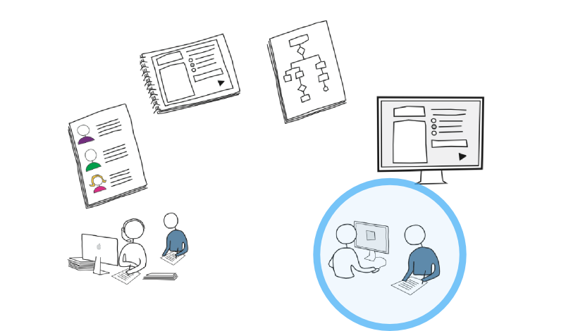
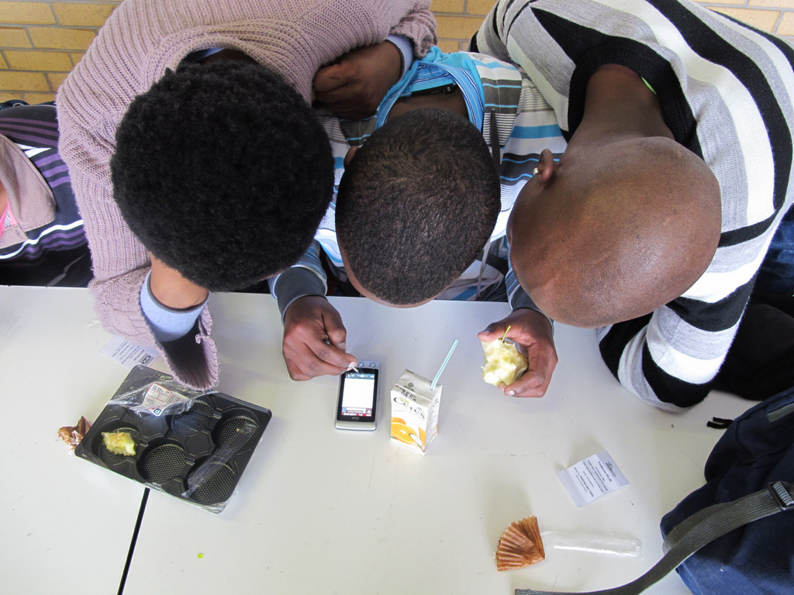
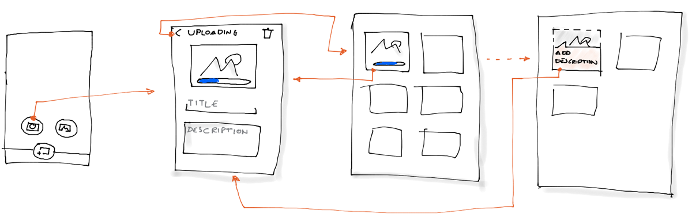
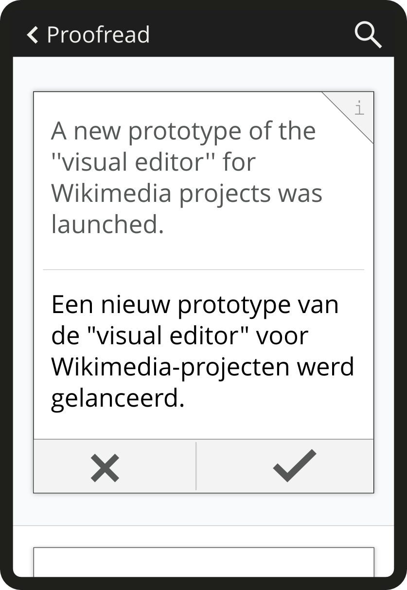
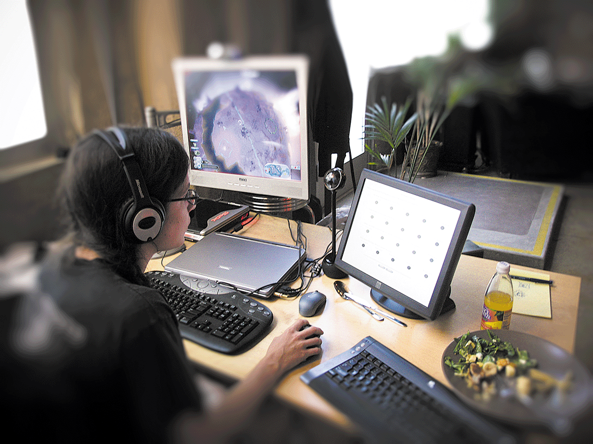
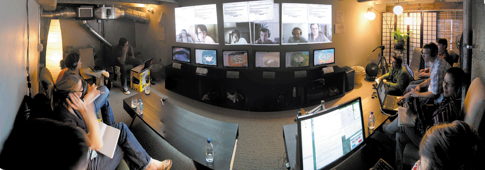

Pruebas de usabilidad
Experiencia de Usuario en Aplicaciones Móviles
Pruebas de usabilidad:
Organizar y conducir tests con usuarios
Usabilidad
Pasos básicos
- Decidir lo que vamos a probar
- Definir un plan
- Buscar participantes
- Observar cómo interactúan con el producto
- Identificar y resumir los hallazgos
Decidir lo que vamos a probar
Tu aplicación existente
Objetivo. Aprender sobre tus usuarios, e identifica problemas.
La competencia
Objetivo. Observar que ideas funcionan y cuales no.
Sketches
Pide que reinterprete la idea (¿De qué crees que se trata?)
Objetivo. Entender los conceptos del usuario y los elementos confusos para él.
Composiciones no interactivas
Pregunta sobre expectativas (¿Qué esperarías ver al acceder aquí?)
Objetivo. Identificar malentendios con las funcionalidades presentadas.
Prototipos funcionales
Objetivo.Identificar problemas en la interacción.
Definir un plan de usabilidad
- Escenarios a probar
- Preguntas pre y post test
- Tareas, observaiones a realizar y resultado esperado
Actividad: Define un plan de usabilidad
Crea un plan de usabilidad para tu aplicación actual, y para el prototipo que has creado.
Buscar los participantes
Número de participantes
3-5 participantes por ronda son suficientes para identificar los problemas principales.
Participantes cercanos a nuestro público objetivo
Usa las variables de comportamiento para reclutar a los participantes

Observar cómo interactúan con el producto
Identificar y resumir los hallázgos
Dificultades en pruebas de usabilidad móviles
Diferencias entre plataformas
Los prototipos en HTML permiten probar con usuarios de distintos dispositivos.
Compartir la pantalla
- Airplay para iOS. No hay solución sencilla para Android de momento.
- Soluciones creativas para grabar la pantalla del móvil:
- Usar un portátil
- Adherir una cámara
Herramientas
QCamera
QCamera para MacGoogle hangout
- Compartir escritorio
- La opción "on Air" permite subir el video a YouTube automáticamente
Material adicional
Artículos
Libros
Rocket Surgery Made Easy
Steve Krug. New Riders 2010.